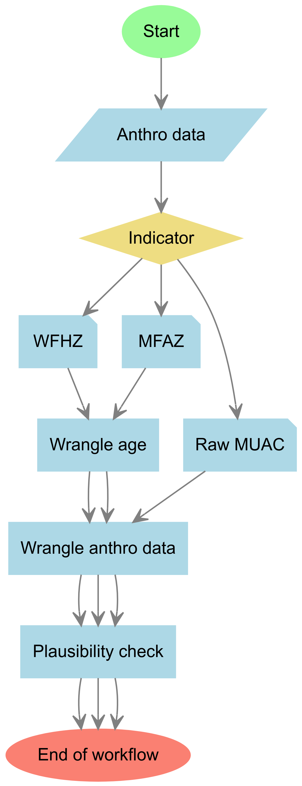

Child anthropometric assessments are the cornerstones of child nutrition and food security surveillance around the world. Ensuring the quality of data from these assessments is paramount to obtaining accurate child under nutrition prevalence estimates. The timeliness of reporting is, as well, critical to allowing timely situation analyses and responses to tackle the needs of the affected population.
The mwana package streamlines data quality checks of and acute undernutrition prevalence estimation from anthropometric data of children aged 6 to 59 months old. This is made possible through the many years of leadership and development work in nutrition surveys of the Standardized Monitoring and Assessment of Relief and Transitions (SMART) initiative through its nutrition survey guidance which mwana builds upon as a development framework. The main functionalities of the mwana package on acute undernutrition data quality checks are mainly convenience wrappers to functions in the nipnTK package.
The term mwana means child in Elómwè, a local language spoken in the central-northern regions of Mozambique where the author hails from. It also has a similar meaning across other Bantu languages, such as Swahili, spoken in many parts of Africa.
Motivation
mwana was borne out of the author’s own experience of having to work with multiple child anthropometric data sets to conduct data quality appraisal and prevalence estimation as part of the Quality Assurance Team of the Integrated Phase Classification (IPC) Global Support Unit. The current standard child anthropometric data appraisal workflow is extremely cumbersome, requiring significant time and effort utilizing different software tools - SPSS, Microsoft Excel, SMART Emergency Nutrition Assessment (ENA) software - for each step of the process for a single dataset. This process is repeated for every data set needing to be processed and often needing to be implemented in a relatively short period of time. This manual and repetitive process, by its nature, is extremely error-prone.
mwana provides functions that can simplify this cumbersome workflow into a process that can be programmatically designed particularly when handling multiple-area datasets. Whilst developed with the analytic and reporting needs of the IPC Global Support Unit in mind, mwana can be used generally for anthropometric datasets of children for the purpose of assessing data quality and for estimating prevalence of acute undernutrition in children 6-59 months old.
Installation
mwana is not yet on CRAN but can be installed from the nutriverse R Universe as follows:
install.packages(
"mwana",
repos = c('https://nutriverse.r-universe.dev', 'https://cloud.r-project.org')
)then loaded into the current environment via
What does mwana do?
[!WARNING]
Please note that
mwanais still experimental but is already in late stage alpha version testing nearing a stable release with development focusing on backwards compatible patch or minor changes. Current functionalities described below may still change in the future but are likely to be compatible with the current interface or approach.
Currently, mwana has the following functionalities that support the creation of a programmatic workflow illustrated in the figure to the left.
1. Data plausibility checks of acute undernutrition anthropometric data of children 6-59 months old
mwana has functions for performing data plausibility checks on weight-for-height z-score (WFHZ) data based on the SMART plausibility checkers, data quality scoring, and data quality classification implemented by the ENA for SMART software, their scoring and classification criterion. To learn more about these WFHZ plausibility checks, the functions that implement them, and how to use these function, read this guide.
mwana also has functions for performing data plausibility checks on mid-upper arm circumference (MUAC) data based on recent research and recommendations on MUAC-for-age z-score (MFAZ) and its utility for data plausibility checks of MUAC data. To learn more about these MUAC plausibility checks, the functions that implement them, and how to use these functions, read this guide.
2. Prevalence estimation of acute undernutrition
mwana has prevalence estimators developed to take into account SMART guidelines on estimation approach to use based on an assessment of data quality. These functions accept input datasets that include multiple survey domains and return summary output tables with prevalence estimates for each survey domain.
To read about the functions and the process for estimating acute undernutrition prevalence from WFHZ and/or edema data, read this guide.
To read about the functions and the process for estimating acute undernutrition prevalence from MUAC data, read this guide on using raw MUAC and/or edema data and this guide on using MFAZ and/or edema data.
To read about functions and the process for estimating combined acute undernutrition prevalence, read this guide.
3. IPC sample size checker
mwana provides a handy function for checking whether a specific anthropometric dataset has met the minimum sample size requirements for each of the dataset domains based on IPC requirements. The function assesses this sample size requirement based on whether the dataset was collected through a survey, a screening exercise, or a sentinel site surveillance. To learn more about this function, read this guide.
4. Reporting of data plausibility checks and prevalence estimation summary outputs
mwana has helper functions that process summary output tables and turn them into presentation and/or report ready tables.
[!TIP]
If you are undertaking research using anthropometric data of children 6-59 months old with a focus on acute undernutrition,
mwanahas functions to wrangle weight, height, age, WFHZ, MUAC, and MFAZ data before using it in your models.
Citation
If you use mwana package in your work, please cite using the suggested citation provided by a call to citation() function as follows:
citation("mwana")
#> To cite mwana in publications use:
#>
#> Tomás Zaba, Ernest Guevarra (2024). _mwana: An Efficient Workflow for
#> Plausibility Checks and Prevalence Analysis of Wasting in R_.
#> doi:10.5281/zenodo.14176624
#> <https://doi.org/10.5281/zenodo.14176624>, R package version 0.2.1,
#> <https://nutriverse.io/mwana/>.
#>
#> A BibTeX entry for LaTeX users is
#>
#> @Manual{,
#> title = {mwana: An Efficient Workflow for Plausibility Checks and Prevalence Analysis of Wasting in R},
#> author = {{Tomás Zaba} and {Ernest Guevarra}},
#> year = {2024},
#> note = {R package version 0.2.1},
#> url = {https://nutriverse.io/mwana/},
#> doi = {10.5281/zenodo.14176624},
#> }Community guidelines
Feedback, bug reports and feature requests are welcome; file issues or seek support here. If you would like to contribute to the package, please see our contributing guidelines.
This project is released with a Contributor Code of Conduct. By participating in this project you agree to abide by its terms.